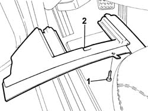
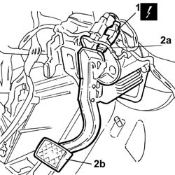

5520G12 SWITCH ON BRAKE PEDAL FOR KEYLESS-GO SYSTEM - R.R. FOR VEHICLES WITH AUTOMATIC TRANSMISSION
- Path
- Procedures > 55 ELECTRICAL EQUIPMENT > 5520 ENGINE STARTING > 5520G KEYLESS-GO STARTING SYSTEM > 5520G12 SWITCH ON BRAKE PEDAL FOR KEYLESS-GO SYSTEM - R.R. FOR VEHICLES WITH AUTOMATIC TRANSMISSION
- Kind
- repair procedure (removal / refitting; the operation number is the code)
- Applies to
- engines: 3.0 V6, 3.2 V6; all production periods
- Interactive page
- https://sloeber94.github.io/elrnDB-lThss/en/#/192783
Applies to: engines: 3.0 V6, 3.2 V6; all production periods
 Removing
Removing
 Refitting
Refitting- Open the boot and disconnect the negative battery terminal.
1. Undo the bolts fixing the trim under the dashboard, driver's side.
2. Remove the trim under the dashboard, driver's side.

Applies to: engines: 3.0 V6, 3.2 V6; all production periods
1. Disconnect the electrical connection for the brake pedal switch.
 | Description | Connector |
|---|---|---|
1 | Switch on brake pedal | I030 |
2. Undo and remove the switch (2a) from the brake pedal (2b).

Applies to: engines: 3.0 V6, 3.2 V6; all production periods
Refitting
Removing- Fit the switch on the brake pedal.
- Connect the electrical connection.
| Description | Connector |
|---|---|---|
. | Switch on brake pedal | I030 |
- Fit the trim under the dashboard, driver's side.
- Connect the negative battery lead, then close the boot.